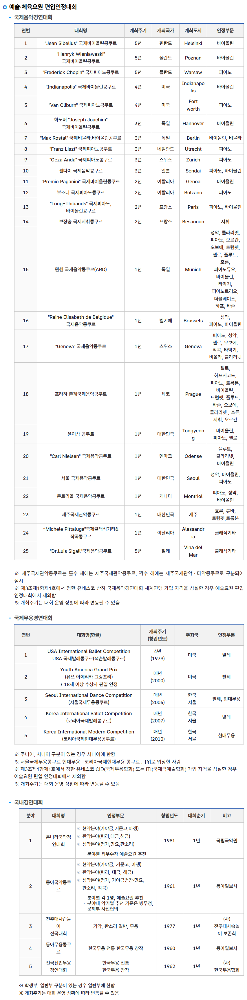

예술 콩쿠르

콩쿠르 종목별로 면제
올림픽처럼 4년에 한번도 아니고 3~5년은 몇개 없고 매년하는 콩쿠르들이 저렇게 많음
병무청 본문 내용 링크
예술 콩쿠르

콩쿠르 종목별로 면제
올림픽처럼 4년에 한번도 아니고 3~5년은 몇개 없고 매년하는 콩쿠르들이 저렇게 많음
병무청 본문 내용 링크
피아노, 바이올린, 플룻은 고오급 음악이라 1위하면 군면제고 댄스음악은 저질 음악이라 세계 차트 씹어먹어도 군바리냐ㅋㅋㅋㅋㅋㅋㅋㅋ
콩쿠르는 높으신 자제분들이 하시는 교양이거든
군면제 논란에서 잊지 말아야 하는게 여성징병이다
예체능 말살작전쓰냐 저러다가 다 죽어.